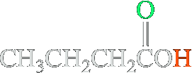
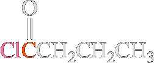
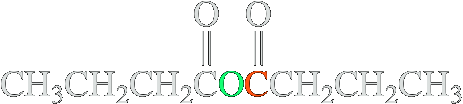
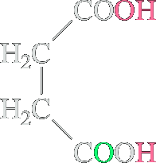
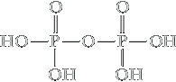
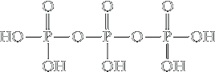

Acid anhydrides
The functional group of a carboxylic anhydride is two acyl groups bonded to an oxygen atom. These compounds are called acid anhydrides because they are formally derived from two carboxylic acids by the loss of water. An anhydride may be symmetrical (two identical acyl groups), or it may be mixed (two different acyl groups). Anhydrides are named by replacing the word acid in the name of the parent carboxylic acid with the word anhydride.


The electronegative power of the halogens in acyl halides activates the carbonyl function to attack by other, even weak, nucleophiles. For example, treatment of acyl halides with carboxylic acids results in carboxylic anhydrides.
| Butanoic acid | + | Butanoyl chloride | Δ, 8 h ⟶ −HCl | 85% Butanoic anhydride" |
As the name indicates, carboxylic anhydrides are formally derived from the corresponding acids by loss of water. Although carboxylic acid dehydration is not a general method for anhydride synthesis, cyclic anhydride may be prepared by heating dicarboxylic acids. A condition for the success of this transformation is that the ring closure lead to a five- or six-membered ring product.
| Butanedioic acid (Succinic acid) | 300° ⟶ −H2O |
 95% 95%Butanedioic anhydride (Succinic anhydride) |
Cyclic anhydrides are named from the dicarboxylic acids from which they are derived. Here are the cyclic anhydrides derived from succinic acid, maleic acid, and phthalic acid.
Acid anhydrides react with alcohols to give one mole of ester and one mole of a carboxylic acid.
| Acetic anhydride | + | HOCH2CH3 Ethanol | ⟶ |  Ethyl acetate Ethyl acetate | + |  Acetic acid Acetic acid |
 Phthalic anhydride Phthalic anhydride | + |  2-Butanol 2-Butanolsec-Butyl alcohol) (racemic) | ⟶ |  1-Methylpropyl hydrogen phthalate 1-Methylpropyl hydrogen phthalate(sec-Butyl hydrogen phthalate) (racemic) |
Thus, the reaction of an alcohol with an anhydride is a useful method for the synthesis of esters. This reaction is catalyzed by acids and by tertiary amines.
Aspirin is synthesized on an industrial scale by the reaction of acetic anhydride and salicylic acid.
 2-Hydroxybenzoic acid 2-Hydroxybenzoic acid(Salicylic acid) | + | Acetic anhydride | ⟶ |  Acetylsalicylic acid Acetylsalicylic acid(Aspirin) | + | Acetic acid |
Phosphoric Anhydrides
Because of the special importance of anhydrides of phosphoric acid in biological chemistry, we include them here to show their similarity with the anhydrides of carboxylic acids. The functional group of a phosphoric anhydride is two phosphoryl groups bonded to an oxygen atom. Here are structural formulas for two anhydrides of phosphoric acid and the ions derived by ionization of each acidic hydrogen.
| Diphosphoric acid (Pyrophosphoric acid) |  Diphosphate ion Diphosphate ion(Pyrophosphate ion) | Triphosphoric acid |  Triphosphate ion Triphosphate ion |